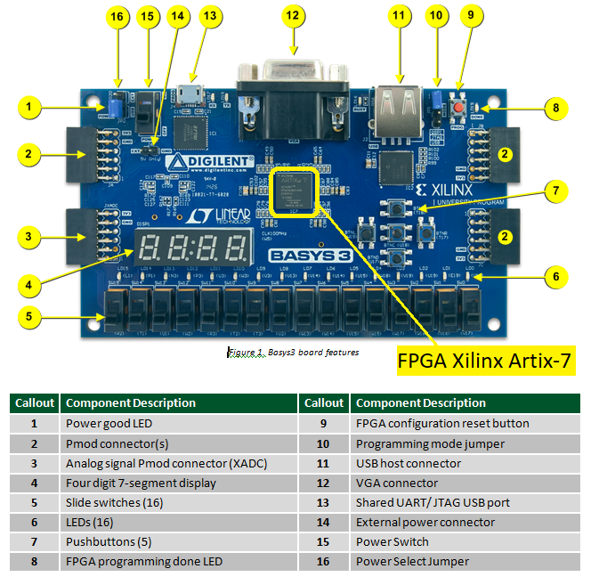
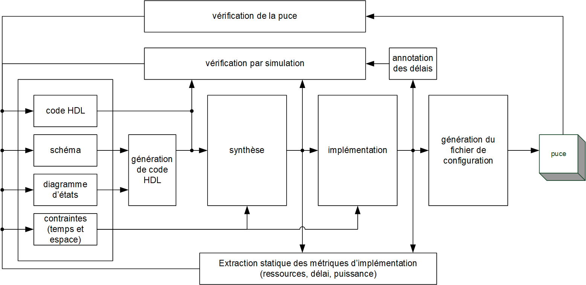

|
INF3500 - Conception et réalisation
|
À la fin de ce laboratoire, vous devrez être capable d'appliquer le flot de conception d'un système numérique à l'aide d'outils de conception :
Avant le début de la période de laboratoire, suivre les étapes suivantes:
|
La carte Basys 3 comporte tous les éléments nécessaires pour se familiariser avec la technologie des FPGA. Elle contient des interfaces simples qui permettent à l'utilisateur d'interagir avec le programme du FPGA. Procédure à suivre.
Consultez le manuel de l'utilisateur disponible en ligne pour tous les détails sur la carte Basys 3. |
 Vue d'ensemble de la carte Basys 3 [Source : Digilent] |
Le flot de conception de systèmes numériques est montré à la figure suivante. Consultez les diapositives du cours, série 0103, pour une description détaillée.
Lancez Active-HDL, créez un espace de travail (workspace) et créez un projet (design).
[Recommandation : sur votre machine, créez un répertoire "inf3500\labo1" dans lequel vous mettrez tous les fichiers de ce laboratoire.]
Téléchargez les fichiers vote_labo1_erreurs.vhd et vote_labo1_tb.vhd dans votre répertoire de travail puis ajoutez-les à votre projet.
Pour de l'aide concernant l'utilisation de Active-HDL, vous pouvez suivre le tutoriel proposé par Aldec ou tout autre que vous trouverez en ligne en cherchant par exemple "active-hdl student edition user guide" ou "active-hdl tutorial".
Le fichier vote_labo1_erreurs.vhd
comporte cinq erreurs de syntaxe. Pour vous aider à les trouver, dans
Active-HDL faites Design > Compile ou
pressez la touche F11. Notez et corrigez les cinq erreurs une à la fois.
On peut aussi effectuer la compilation directement
dans la console de Active-HDL avec la commande :
acom -2018 votre-chemin\inf3500\labo1\vote_labo1_erreurs.vhd
[Recommandation : Consultez les diapositives du cours, série 0104, pour une brève introduction au langage VHDL.]
Dans Active-HDL, définissez la paire entité/architecture vote_labo1_tb(arch) comme unité principale (Top-level) :
Design > Settings > General
> Top-level; ou Lancez la simulation :
asim vote_labo1_tb
run
Dans la console, on peut relancer la simulation avec la
commande restart et arrêter la simulation
avec la commande endsim. On peut cacher ou
activer la console, ou y amener le focus, en tapant alt-0 (alt-zéro).
[Note : vous pouvez aussi utiliser un autre simulateur de votre choix, comme Vivado ou bien GHDL, le simulateur libre de VHDL, mais ces outils ne sont pas supportés dans le cours.]
En consultants les spécifications données dans les commentaires et les résultats de la simulation, corrigez les erreurs fonctionnelles dans le fichier vote_labo1_erreurs.vhd. Sauvegardez la version corrigée sous le nom vote_labo1.vhd.
La synthèse s'effectue avec le logiciel Vivado de Xilinx. On peut utiliser l'interface graphique ou la ligne de commande. La ligne de commande est beaucoup plus fiable, plus robuste et plus rapide et c'est elle qui est décrite ici.
Ajoutez le fichier labo-1-Basys-3.xdc
dans votre répertoire "inf3500\labo1". Ce fichier contient les
contraintes de
synthèse et d'implémentation pour votre projet. Il spécifie
l'assignation des pattes du FPGA aux ports du module vote_labo1
décrit en VHDL.
Sous votre répertoire "inf350\labo1", créez un répertoire "synthese-implementation". Lancez une fenêtre d'invite de commande ("cmd" sous Windows) et naviguez au répertoire "inf350\labo1\synthese-implementation".
De ce répertoire, lancez Vivado en mode script avec la
commande [repertoire-d-installation-de-Vivado]\bin\vivado
-mode tcl, où [repertoire-d-installation-de-Vivado]est
probablement C:\Xilinx\Vivado\2020.1 si votre
système d'exploitation est Windows.
Dans la fenêtre, à l'invite de commande Vivado%,
entrez les commandes suivantes [Remarque : attention, alors que Windows
spécifie des chemins avec le '\', dans l'invite de commande
de Vivado il faut utiliser plutôt '/'] :
read_vhdl ../vote_labo1.vhd
read_xdc ../labo-1-Basys-3.xdc
synth_design -top vote_labo1 -generic W=4 -part xc7a35tcpg236-1 -assert
On remarque que :
vote_labo1.vhd est un fichier de
code VHDL décrivant le module à synthétiser;labo-1-Basys-3.xdc est un fichier
de texte contenant les contraintes d'implémentation;-generic W=4 spécifie la valeur à
donner au generic W du module vote_labo1
trouvé dans le fichier vote_labo1.vhd; et,-part xc7a35tcpg236-1 est le
modèle spécifique du FPGA présent sur la carte et cible de la synthèse.Toutes ces valeurs peuvent être modifiées selon les besoins.
Inspectez
la fenêtre d'invite de commandes et les fichiers du répertoire
"synthese-implementation". S'il y a des erreurs, corrigez-les
si nécessaire et
recommencez. En particulier, vous trouverez un fichier vivado.log
qui retrace toutes les activités et un fichier vivado.jou
qui journalise vos commandes. Les produits de la synthèse sont dans un
répertoire .Xil.
L'implémentation est divisée en deux parties : le placement des fonctions logiques à des ressources spécifiques du FPGA, et le routage des interconnexions entre ces ressources.
Entrez les commandes suivantes :
place_design
route_design
Inspectez la fenêtre d'invite de commandes et les fichiers du répertoire "synthese-implementation". S'il y a des erreurs, corrigez-les si nécessaire et recommencez.
Entrez la commande suivante :
write_bitstream -force fichier-de-programmation.bit
Inspectez la fenêtre d'invite de commandes et les fichiers du répertoire "synthese-implementation". S'il y a des erreurs, corrigez-les si nécessaire et recommencez.
La carte doit être reliée à votre ordinateur et allumée, conformément à la partie 2.
Entrez les commandes suivantes :open_hw_manager
connect_hw_server
get_hw_targets
open_hw_target
current_hw_device [get_hw_devices xc7a35t_0]
set_property PROGRAM.FILE {fichier-de-programmation.bit} [get_hw_devices xc7a35t_0]
program_hw_devices [get_hw_devices xc7a35t_0]
Les commandes données ici établissent entre autres la communication avec le FPGA sur la carte. Il arrive que la synchronisation ne se fasse pas correctement du premier coup. Si c'est le cas, relancez-les commandes une à une jusqu'à ce que ça fonctionne et que le FPGA soit programmé.
Vous pouvez maintenant vérifier le comportement correct du module en activant les quatre commutateurs de droite et en observant la DEL de droite.
Si le comportement n'est pas conforme aux spécifications ... il faut alors retourner au code VHDL pour le corriger, puis recommencer.
On peut effectuer toutes les opérations de la synthèse à la programmation du FPGA à l'aide du fichier de commande labo-1-synth-impl.tcl.
À partir de votre répertoire labo1\synthese-implementation, exécutez la commande suivante dans une fenêtre de ligne de commande :C:\Xilinx\Vivado\2020.1\bin\vivado -mode tcl -source ..\labo-1-synth-impl.tcl
(en supposant que Vivado soit installé dans le répertoire C:\Xilinx\Vivado\2020.1\).
Ce fichier suppose que tous les noms de fichiers, leur localisation et le répertoire d'exécution du script sont conformes aux explications données ici.
En général, il n'est pas nécessaire de refaire toutes les étapes précédentes quand une étape ne fonctionne pas. On peut en général ne refaire que l'étape qui a flanché.
Modifiez le module labo1_vote pour qu'il fonctionne avec une valeur de W = 5. Répétez toutes les étapes du flot de conception. Nommez votre fichier "labo_1_vote_ameliore.vhd".
Utilisez le banc d'essai vote_labo1_tb.vhd pour vérifier le fonctionnement correct de votre module.
Modifiez le fichier labo-1-Basys-3.xdc pour accommoder une entrée de plus. Utilisez le commutateur #4 comme 5e entrée.
Faites la synthèse, l'implémentation, la génération du fichier de configuration, la programmation de la puce et la vérification de la puce.
[Mise en garde. Compléter correctement les parties 3 et 4 peut donner une note de 17 / 20 (85%), ce qui peut normalement être interprété comme un A. La partie 5 demande du travail supplémentaire qui sort normalement des attentes du cours. Il n'est pas nécessaire de la compléter pour réussir le cours ni pour obtenir une bonne note. Il n'est pas recommandé de s'y attaquer si vous éprouvez des difficultés dans un autre cours. La partie 5 propose défi pour les personnes qui souhaitent s'investir davantage dans le cours INF3500 en toute connaissance de cause.]
a. Proposez **deux** manières de décrire le module en VHDL afin qu'il accommode un grand nombre d'entrées. Expliquez complètement vos deux suggestions à l'aide d'exemples.
b. Remettez le code de votre module qui fonctionne avec W = 16, ainsi que le fichier de configuration correspondant qui peut être programmé sur la carte utilisant les 16 commutateurs.
c. Remettez le code de votre module qui fonctionne avec toute valeur de W entre 3 et 63 inclusivement.
| critère |
points |
|---|---|
| Partie 3 c. : fichier vote_labo1.vhd corrigé et commenté montrant chacune des erreurs de syntaxe | 8 |
| Partie 3 d. : fichier vote_labo1.vhd corrigé et commenté montrant chacune des erreurs de fonctionnalité | 4 |
| Partie 4 : fichier vote_labo1_ameliore.vhd et le fichier de configuration correspondant fichier-de-programmation.bit qui fonctionnent pour W = 5 | 3 |
| Élégance et lisibilité du code : alignement, choix des identificateurs, qualité et pertinence des commentaires, respect des consignes de remise incluant les noms des fichiers, etc. | 2 |
| Partie 5 a., b. et c.: au-delà du A | 3 |
| Maximum possible sur 20 points |
20 |
Les liens suivants ont été vérifiés en juillet 2020.
Aldec Active-HDL User Guide : accessible en faisant F1 dans l'application, et accessible à partir du site de la compagnie.
Tous les manuels de Xilinx : https://www.xilinx.com/products/design-tools/vivado.html#documentation
Vivado Design Suite Tcl Command Reference Guide : https://www.xilinx.com/support/documentation/sw_manuals/xilinx2019_2/ug835-vivado-tcl-commands.pdf
Vivado Design Suite User Guide - Design Flows Overview : https://www.xilinx.com/support/documentation/sw_manuals/xilinx2019_2/ug892-vivado-design-flows-overview.pdf
Vivado Design Suite User Guide - Synthesis : https://www.xilinx.com/support/documentation/sw_manuals/xilinx2019_2/ug901-vivado-synthesis.pdf
Vivado Design Suite User Guide - Implementation : https://www.xilinx.com/support/documentation/sw_manuals/xilinx2019_2/ug904-vivado-implementation.pdf